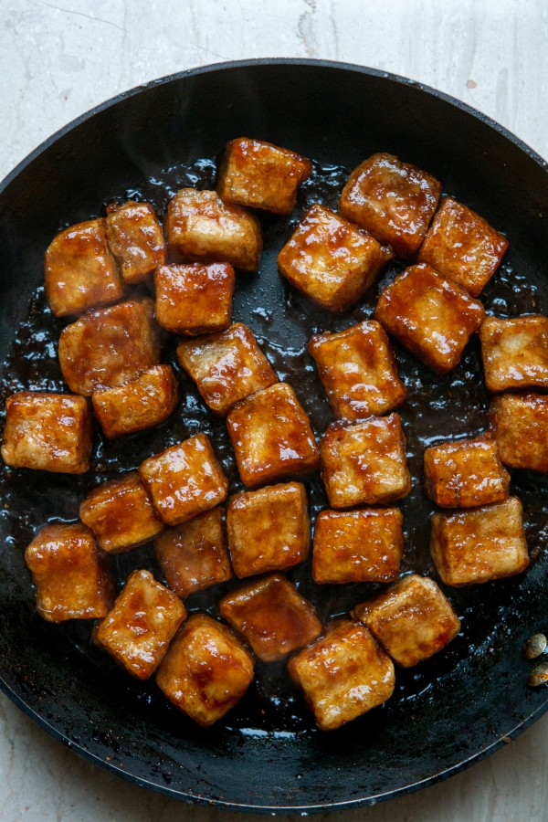

Life Changing Tofu recipe:

Ingredients:
- 2 cubes of natural tofu (2x180 g)
- 3 tablespoons of potato flour
- oil
- 3 tablespoons of soy sauce
- 3 tbsp agave syrup or other sweetener
- 1/4 - 1/3 cup of water
- 2 - 3 cm of ginger
- 1-2 garlic clove
- to serve: chives, black pepper
Preparation:
-
Cut the tofu into cubes, put it in a bag, pour in the
potato flour and shake it until it is evenly coated in
flour. Do not throw away the bag, shake it out and
leave it to coat the tofu in flour.
-
In the bottom of the largest frying pan you have,
heat enough oil to cover the entire bottom. Don't
worry, the tofu won't be greasy.
-
Gently place the breaded tofu cubes in the hot oil
and fry for 3-4 minutes on one side, until the breading
is warm and crispy. Then turn and cook the same on
the other side.
-
In the meantime, prepare a plate lined with a paper
towel and make the sauce. Add the soy sauce, agave
syrup and water to the glass. Grate the ginger on the
fine holes of the grater, about two teaspoons should be
collected, and the garlic. Add to the ingredients in the
glass and mix well.
-
New improved version: Put the fried tofu on a paper
towel for a while. Pour the sauce into a smaller pan
and heat over the highest heat until the sauce begins to
bubble intensely, then add the tofu. Stir constantly, and
when the tofu is covered with sauce, it's ready. Sprinkle
with chives and black pepper and serve with rice or
your favorite Asian noodles. Outstanding the next day
in the lunchbox. Note, apparently it disappears overnight
from the fridge.
Tips:
-
The less water you add to the sauce, the crunchier the tofu will be.
-
Potato flour (starch) can possibly be replaced with corn flour: it will
give a more crunchy, American effect. Or the less popular tapioca
flour, which gives an almost identical effect. No other flour will work
in this recipe!
-
Agave syrup, maple syrup, cane sugar, stevia, erythritol - any sweetener
will be good, as long as the tofu has an exciting, sweet and salty taste.
If you use liquid sweeteners, add them as much as in the recipe, if you
use sugar, add a little less.
-
If you don't like washing dishes and you have a lot of free time, wait
until the oil cools down after frying the tofu - be careful, it's very hot,
it will take several minutes! - and pour it out. Then wipe the pan carelessly
and you can prepare the second part of the dish on it.
Credit:
Original recipe